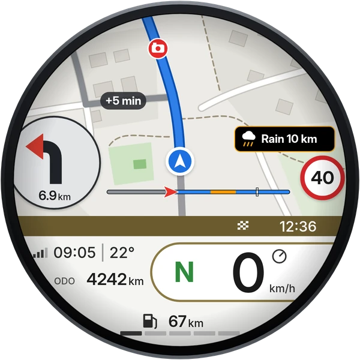
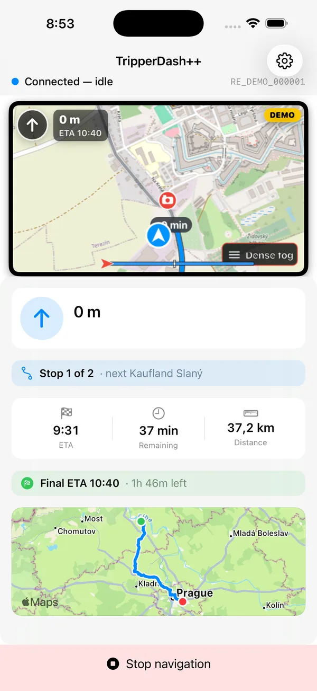
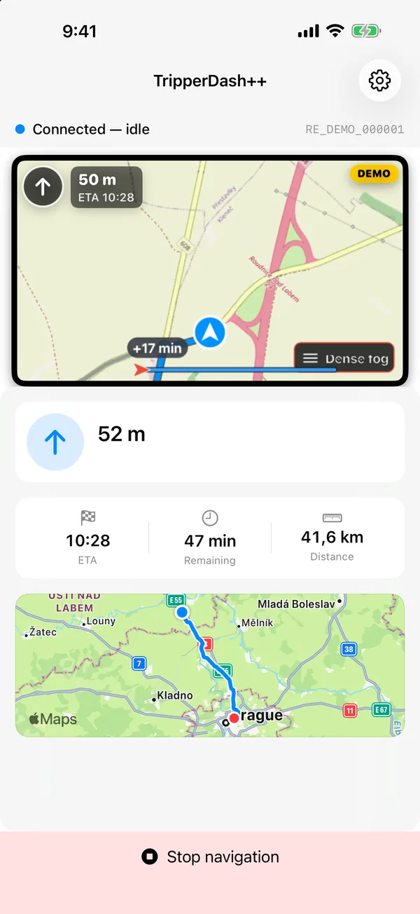
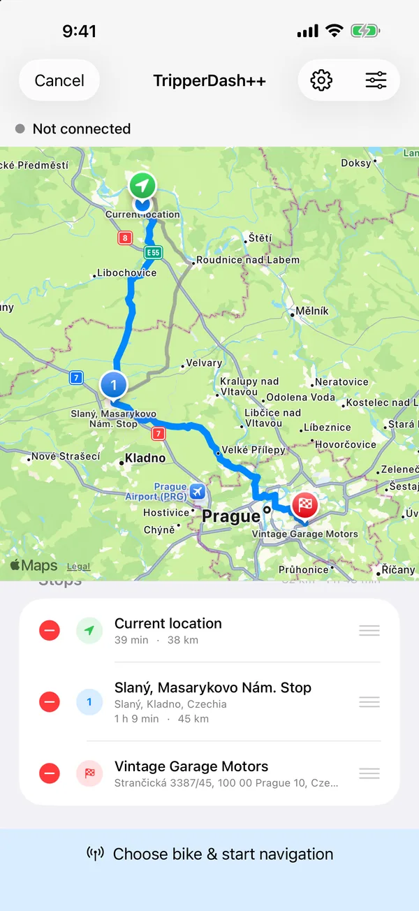
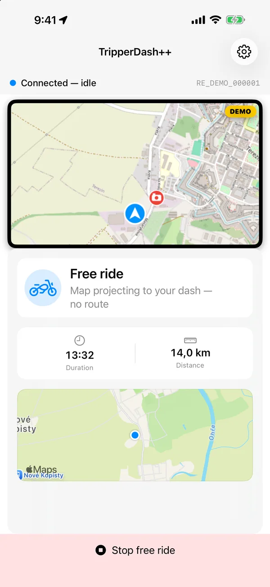
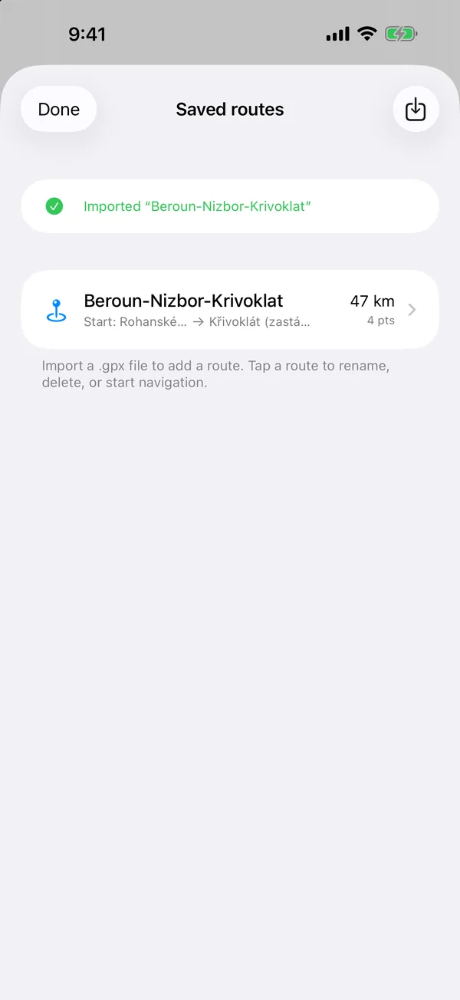
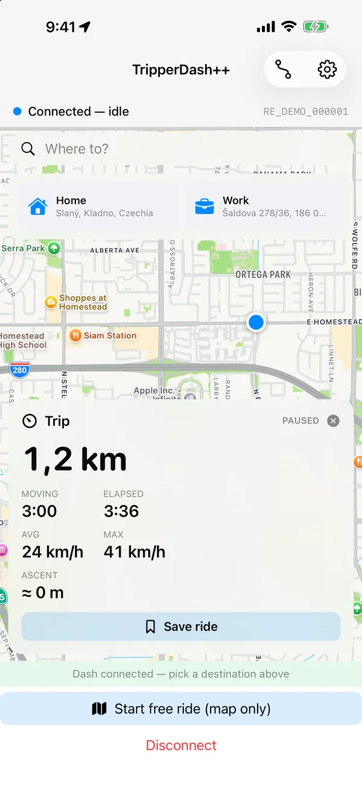
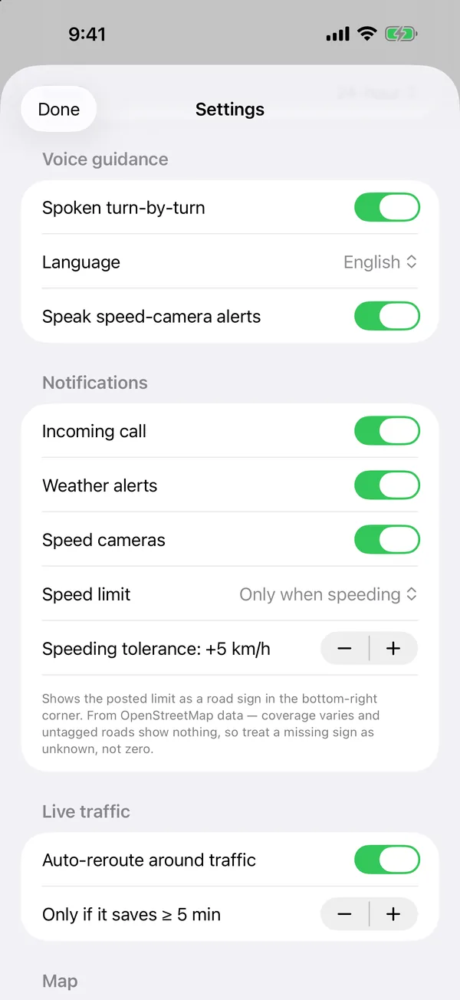

Works with the round, map-capable Tripper (K1G) TFT dash on
- Himalayan 450
- Guerrilla 450
- Bear 650
Not the small arrow-only Tripper Navigation Pod
TripperDash++ streams a live turn-by-turn moving map straight to your Royal Enfield Tripper TFT display — so your eyes stay on the road, not on your phone.
Works with the phone locked and pocketed · No account · No ads · No tracking

Works with the round, map-capable Tripper (K1G) TFT dash on
Not the small arrow-only Tripper Navigation Pod
The Tripper display was built for basic arrows. TripperDash++ turns it into a full GPS.
Heading-up OpenStreetMap with your route drawn in and a whole-route progress bar. Zoom follows your speed, and the dash joystick nudges it in or out.
Next-turn glyph from a field-verified catalogue of every symbol the dash can draw, distance to the turn and ETA. Powered by Apple Maps directions.
Keeps streaming with your phone locked and in your pocket, on "Always" or "While Using" location. Nothing to hold, nothing to glance at.
Optional spoken turn-by-turn in 8 languages, fully offline. It ducks your music instead of cutting it.
Looks down the route, not just overhead: rain, snow, ice, frost risk, storms, gusts, crosswind and fog, with how far away they are ("Rain 15 km").
The posted speed-limit sign for the road you're on, speed cameras on the map with optional spoken alerts, and your average speed inside average-speed sections.
Compare alternative routes before you go, with their ETA difference shown on the dash. Optional auto-reroute when traffic makes a faster route worth it.
Search, favourites, a long-press pin, multi-stop routes and saved routes. Import a GPX and prune or reorder its points, or share a place straight from Google Maps or Apple Maps. Add or change stops mid-ride without stopping the navigation.
Distance, moving time, average and top speed and elevation gain from the GPS the map already uses. Every ride of the last 30 days is kept with its map, so you can save it as a route or export it as GPX later.
Incoming-call card and phone battery, GPS and signal on the dash, like the factory app. The dash buttons skip music tracks.
The next turn and ETA on your Lock Screen and in the Dynamic Island. A home-screen widget starts a ride home, to work or to fuel in one tap, and Siri and Shortcuts can start, redirect or stop it.
Auto follows local sunrise and sunset from your GPS fix, so the map is readable in any light.
Joins your bike's Tripper Wi-Fi from inside the app and reconnects on its own after a call or a fuel stop.
Engineered to sip power — it draws less battery than the official app, so your phone lasts longer on a full day's ride.
Real screenshots, taken in Demo Mode — swipe for more.







Three steps from parked to rolling.
Search a destination, add stops, import a GPX or share a place from Google Maps. Routing and search use Apple Maps over cellular.
Tap connect — the app joins your Tripper's Wi-Fi and hands the map to the dash automatically.
Lock the phone and go. The dash shows the live map; voice guidance calls out every turn.
Maps & routing
CellularMap tiles and routing come over mobile data
iPhone
Bike Wi-FiCarries only the video to the dash, no internet
Tripper dash
No bike handy? Turn on Demo Mode in Settings to preview the streamed dash right on your phone.
TripperDash++ has no account, no sign-up, and no ads. Nothing about your rides is uploaded to us — maps come from OpenStreetMap, routing from Apple Maps, and everything stays on your device.
Free on the App Store. Put a real map on your Tripper dash.
New features land in the TestFlight beta first. Join, ride with it and tell us what breaks.
Join the TestFlight beta